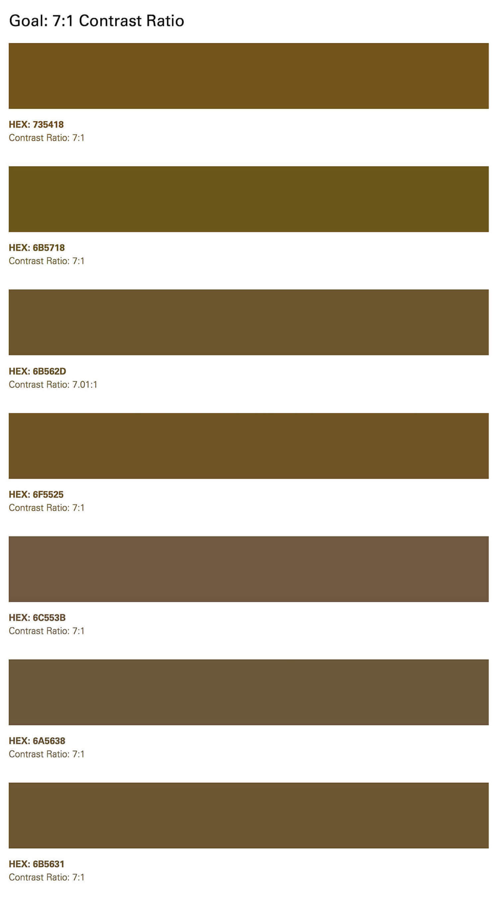
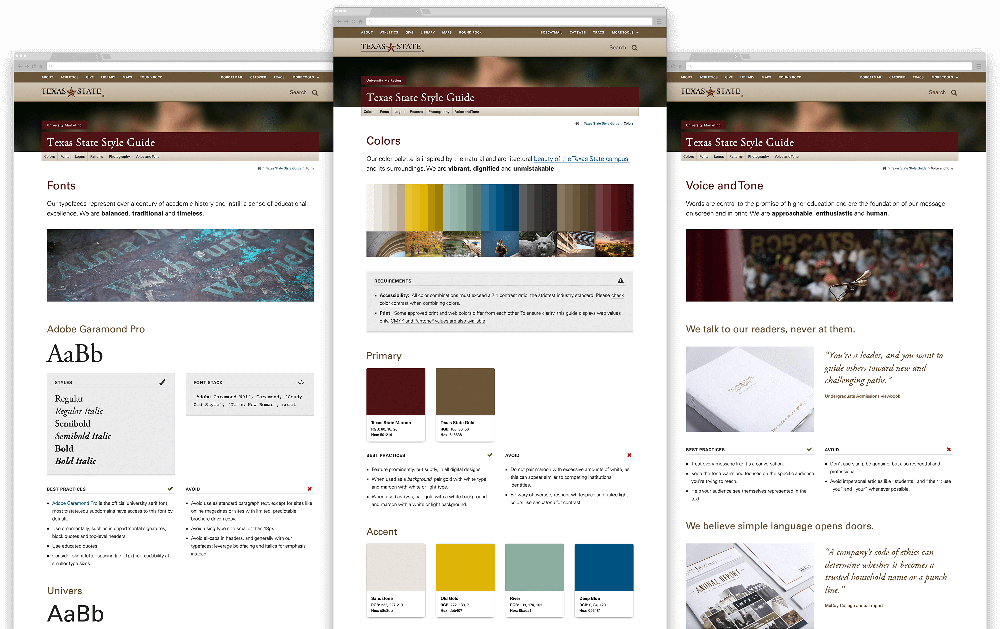

Overview
The Texas State homepage, primary template, and many other websites and apps are designed using elements of the brand system I conceived. It’s documented over at styleguide.txstate.edu.
Context
Texas State’s central marketing efforts matured during a time of heavy growth for the print medium in higher education. Web initiatives had few advocates, and were unable to attract resources or have their impact fully articulated to leadership. Recent name changes added confusion, and the brand was often called inconsistent, contentious, or underdeveloped. Most agreed it was print-centric and not sufficiently documented.

Before: Texas State brand documentation in October 2014
Goals
- Build a compelling, web-first brand identity
- Standardize appearance and voice across dozens of websites, portals, and apps
- Create a strictly accessible and systematic color scheme
- Bring institutional fonts onto the web
- Document style resources in a single location
Process
I organized the project into three broad phases:
- Theory and strategy
- Real-world implementation
- Documentation and awareness
Theory and strategy
I built a few demos to see how the colors, logos, and type behaved visually on the screen. Later I calculated the contrast of existing colors and thoughtfully altered, discarded, or added colors to the palette. Print designers regularly worked with a over 20 weights of Univers and used Garamond, Garamond Premier, and Adobe Garamond interchangeably. Favoring simplicity, I narrowed this down to a manageable selection.


Swatches to assist in selecting an accessible primary gold color

Combining colors, images, and type (and playing with button styles)
Real-world implementation
The digital brand really gained sophistication during the Texas State primary template project, which gave me the opportunity to solicit community feedback and apply styles to living content components. Other major projects, like the Texas State jobs portal and official mobile app, have brought the digital brand to life since releasing it.

Patterns used in the Texas State primary template

Texas State jobs portal highlighting some brand elements

The Texas State mobile app using modern brand elements
Documentation and awareness
I wanted to document our brand strategy to keep products consistent and to give a sense of pride and confidence to digital publishers and vendors. In addition to my strategic contributions, I also organized and wrote most of the copy on the site. The Texas State style guide is public. We consider it a contribution to the higher ed tech and style guide communities that inspired parts of this project.


Major improvements over previous implementation
- Institutional fonts brought to web
- All colors meet AAA accessibility contrast standards
- Systematic tints and shades
- Modern patterns added to brand
- Voice, tone, and photographic style documented
- Sensible, coherent logo rules
Noteworthy features
Tints and shades
I wanted designers to have a robust variety of tints and shades for things like shadows, gradients, and other design subtleties. The university didn’t have any approved tints or a reproducible method for deriving them, so I developed a system for this, documented it, and later produced an open-source color generator that mimicked my process. There’s a Texas State fork, too.
Tints and shades were derived systematically
Buttons
The university’s CMS lacked a button component until recently, so content editors either went without or crafted them in Photoshop (which was inconsistent and kind of an odd necessity). In response, I designed a set of customizable buttons made with HTML and CSS, and featuring some fun interactions. They were released with the Texas State primary template in 2016 and are a major feature of the digital brand.

Example of homemade buttons in the old CMS template
Original demo showcasing pure HTML and CSS buttons
Is it perfect?
Yes! JK, no. Based on the current position of the university regarding digital priorities, I couldn’t have asked for better. But if I could change anything it would be:
- Not confident in fonts: The Univers font wasn’t designed for the web. I favor readability over tradition, but it was more politically expedient to stick with established typography.
- Typeset logo: Many universities are including HTML logo marks in their digital identities for flexibility. I didn’t have approval to pursue this, but would’ve liked to.
- Needs more texture: Some portions of our digital properties are quite flat due to the lack of background patterns and textures. I see some institutions adding brand textures lately, but I realized this a little too late.